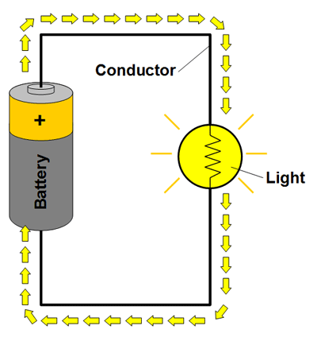

What You Should Know
Rovers
 A rover is a machine designed to move across the solid surface on a planet. Some rovers have been designed to land on other planets and carry gear or transport members of a human space flight crew. Some rovers have been built to drive completely on their own with remote control. NASA has sent an unmanned rover named Curiosity to explore Mars. NASA had four goals for their Mars exploration:
A rover is a machine designed to move across the solid surface on a planet. Some rovers have been designed to land on other planets and carry gear or transport members of a human space flight crew. Some rovers have been built to drive completely on their own with remote control. NASA has sent an unmanned rover named Curiosity to explore Mars. NASA had four goals for their Mars exploration:
- Find out if there was ever life on Mars.
- Understand the Mars’ climate. What is the climate like today? What was it like in the past? Why did it change?
- Understand Mars’ geology. Why is Mars so rocky? How did the planet form?
- Get ready for humans to travel to Mars.
How can a rover help with NASA's goals? What types of tool or features would have to be added to Curiosity to help it complete all its tasks?
Components
The rover circuit is made of lots of components or parts. Each component has a special purpose. The Curiosity Rover (above) has components that are like the R/C Receiver and Motor Control to send information about Mars back to Earth. The red R/C Receiver “listens” for instructions from the blue controller. The green Motor Control component uses electricity to makes the motors move.
You can find descriptions of the other important components in the Snap Circuits Rover Instruction Manual.
Circuits

Electricity flows from a power source along a path to a load, and then back in a loop.
All circuits have these three parts:
- power source (battery)
- load or resistor
- conductor (wire path)
A load is also called a resistor because it creates resistance between the two ends of the power supply. The resistor needs electricity to work, and as it does, it reduces the current flow. In this example, the resistor is a light. As the bulb uses some of the electricity to light up, it reduces the current.
A path does not have to be made of wires. It just needs to be made of a conductive material so there is a path between the power source and the resistor. Some circuits use metal strips, some use magnets, The Snap Circuits Rover uses color-coded wires with snaps on each end to hold them in place. Each wire is made out of copper wrapped in colored plastic. Copper wire is conductive, plastic is not. Can you think of other conductive materials?
Beware of Short Circuits
Warning
Follow this IMPORTANT RULE so that you don't damage the parts or hurt yourself: ALL CIRCUITS NEED A LOAD.
The load (like a light bulb or motor) creates resistance in the circuit. The resistance uses and slows down the electric current.
When a circuit doesn't have enough resistance, it is called a short circuit. In a short circuit, the electricity flows too fast. If this happens, it can damage electrical parts and drain batteries. With enough power, the parts can get hot enough to start a fire. Fortunately, Snap Circuits kits do not have enough power for that.
Before connecting power, always check to be sure your circuit does not have a short.
These are some short circuit examples: